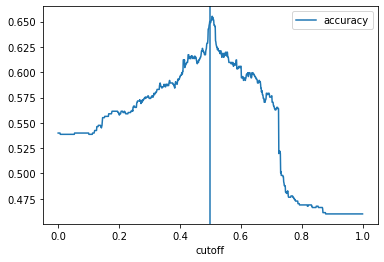

# Import required packages for this chapter
from pathlib import Path
import math
import numpy as np
import pandas as pd
from sklearn.model_selection import train_test_split
from sklearn.linear_model import LogisticRegression, LogisticRegressionCV
from sklearn.metrics import accuracy_score
import matplotlib.pylab as plt
from dmba import classificationSummary
from dmba import AIC_score
from dmba import backward_elimination, forward_selection, stepwise_selection
%matplotlib inlineChapter 10: Logistic Regression (LR)
- 2019-2020 Galit Shmueli, Peter C. Bruce, Peter Gedeck
Data Mining for Business Analytics: Concepts, Techniques, and Applications in Python (First Edition) Galit Shmueli, Peter C. Bruce, Peter Gedeck, and Nitin R. Patel. 2019.
Date: 2020-03-09
Python Version: 3.8.2 Jupyter Notebook Version: 5.6.1
Packages: - dmba: 0.0.12 - matplotlib: 3.2.0 - numpy: 1.18.1 - pandas: 1.0.1 - scikit-learn: 0.22.2
The assistance from Mr. Kuber Deokar and Ms. Anuja Kulkarni in preparing these solutions is gratefully acknowledged.
# Working directory:
#
# We assume that data are kept in the same directory as the notebook. If you keep your
# data in a different folder, replace the argument of the `Path`
DATA = Path('.')
# and then load data using
#
# pd.read_csv(DATA / ‘filename.csv’)Problem 10.1 Financial Condition of Banks.
The file Banks.csv includes data on a sample of 20 banks. The “Financial Condition” column records the judgement of an expert on the financial condition of each bank. This outcome variable takes one of two possible values – weak or strong– according to the financial condition of the bank. The predictors are two ratios used in the financial analysis of banks: TotLns&Lses/Assets is the ratio of total loans and leases to total assets and TotExp/Assets is the ratio of total expenses to total assets. The target is to use the two ratios for classifying the financial condition of a new bank.
Run a logistic regression model (on the entire dataset) that model the status of a bank as a function of the two financial measures provided. Specify the success class as weak (this is similar to creating a dummy that is 1 for financially weak banks and 0 otherwise), and use the default cutoff value of 0.5.
# load the data
bank_df = pd.read_csv(DATA / 'banks.csv')
# cheack few records
bank_df.head()| Obs | Financial Condition | TotCap/Assets | TotExp/Assets | TotLns&Lses/Assets | |
|---|---|---|---|---|---|
| 0 | 1 | 1 | 9.7 | 0.12 | 0.65 |
| 1 | 2 | 1 | 1.0 | 0.11 | 0.62 |
| 2 | 3 | 1 | 6.9 | 0.09 | 1.02 |
| 3 | 4 | 1 | 5.8 | 0.10 | 0.67 |
| 4 | 5 | 1 | 4.3 | 0.11 | 0.69 |
# pretify the variable names
bank_df.columns = [c.replace(' ', '_') for c in bank_df.columns]
bank_df.columns = [c.replace('&', '') for c in bank_df.columns]
bank_df.columns = [c.replace('/', '_') for c in bank_df.columns]
# drop unwanted variables
bank_df.drop(columns = ['Obs','TotCap_Assets'], inplace = True)
bank_df.head()| Financial_Condition | TotExp_Assets | TotLnsLses_Assets | |
|---|---|---|---|
| 0 | 1 | 0.12 | 0.65 |
| 1 | 1 | 0.11 | 0.62 |
| 2 | 1 | 0.09 | 1.02 |
| 3 | 1 | 0.10 | 0.67 |
| 4 | 1 | 0.11 | 0.69 |
# fit a logistic regression (set penalty=l2 and C=1e42 to avoid regularization)
logit_reg = LogisticRegression(penalty="l2", C=1e42, solver='liblinear')
y = bank_df['Financial_Condition']
X = bank_df.drop(columns=['Financial_Condition'])
logit_reg.fit(X, y)LogisticRegression(C=1e+42, class_weight=None, dual=False, fit_intercept=True,
intercept_scaling=1, l1_ratio=None, max_iter=100,
multi_class='auto', n_jobs=None, penalty='l2',
random_state=None, solver='liblinear', tol=0.0001, verbose=0,
warm_start=False)# print coefficients and AIC measures
print('intercept ', logit_reg.intercept_[0])
print(pd.DataFrame({'coeff': logit_reg.coef_[0]}, index=X.columns).transpose())
print('AIC', AIC_score(y, logit_reg.predict(X), df = len(X.columns) + 1))intercept -14.720832806179043
TotExp_Assets TotLnsLses_Assets
coeff 89.832567 8.371267
AIC 18.70583946830599610.1.a. Write the estimated equation that associates the financial condition of a bank with its two predictors in three formats:
10.1.a.i. The logit as a function of the predictors
Answer:
logit = -14.7208 + (89.8326 * TotExp_Assets) + (8.3713 * TotLnsLses_Assets)
10.1.a.ii. The odds as a function of the predictors
Answer
Odds = e^(logit) = e^(-14.7208 + (89.8326 * TotExp_Assets) + (8.3713 * TotLns&Lses_Assets)
10.1.a.ii. The probability as a function of the predictors
Answer:
p = (1 + Exp[-(-14.7208 + (89.8326 * TotExp/Assets) + (8.3713 * TotLns&Lses/Assets)])^-1
10.1.b. Consider a new bank whose total loans and leases/assets ratio = 0.6 and total expenses/assets ratio = 0.11. From your logistic regression model, estimate the following four quantities for this bank (use Python to do all the intermediate calculations; show your final answers to four decimal places): the logit, the odds, the probability of being financially weak, and the classification of the bank (use cutoff = 0.5).
# new record
new_bank = pd.DataFrame(
[[0.11, 0.6]],
columns=['TotExp_Assets', 'TotLns_Lses_Assets'])
new_bank| TotExp_Assets | TotLns_Lses_Assets | |
|---|---|---|
| 0 | 0.11 | 0.6 |
# calculate logit, odds and probability of being financially weak
logit_new = -14.7210 + (89.8339 * new_bank.TotExp_Assets) + (8.3713 * new_bank.TotLns_Lses_Assets)
print("logit = ", logit_new)
odds = math.exp(-logit_new)
print("odds = ", odds)
prob = 1/(1+odds)
print("prob = ", prob)logit = 0 0.183509
dtype: float64
odds = 0.8323443846047233
prob = 0.5457489369367221Probability that the new bank is 0.5457 and therefore the predicted class for this new bank is 1, or “financially week”.
10.1.c. The cutoff value of 0.5 is used in conjunction with the probability of being financially weak. Compute the threshold that should be used if we want to make a classification based on the odds of being financially weak, and the threshold for the corresponding logit.
Answer:
Cutoff value of p=0.5.
Odds = (p) / (1-p) = (0.5) / (1-0.5) = 1
If odds > 1 then classify financial status as “weak” (otherwise classify as “strong”).
Logit = ln (odds) = ln (1) = 0
If Logit > 0 then classify financial status as “weak” (otherwise, classify it as “strong”)
Therefore, a cutoff of 0.5 on the probability of being weak is equivalent to a threshold of 1 on the odds of being weak, and to a threshold of 0 on the logit.
10.1.d. Interpret the estimated coefficient for the total loans & leases to total assets ratio (TotLns&Lses/Assets) in terms of the odds of being financially weak.
Answer:
A positive coefficient in the logit model translates into a coefficient larger than 1 in the odds model. In the logit model, the estimated coefficient for total expenses-to-assets ratio is 8.37. In the odds models, the coefficient is e^8.37 = 4316. This means that an increase of a unit in total loans and leases-to-assets is associated with an increase in the odds of being financially weak by a factor of 4321.
10.1.e. When a bank that is in poor financial condition is misclassified as financially strong, the misclassification cost is much higher than when a financially strong bank is misclassified as weak. To minimize the expected cost of misclassification, should the cutoff value for classification (which is currently at 0.5) be increased or decreased?
Answer:
In order to minimize the expected cost of misclassification in this case, we need to decrease the cutoff.
Problem 10.2 Identifying Good System Administrators.
A management consultant is studying the roles played by experience and training in a system administrator’s ability to complete a set of tasks in a specified amount of time. In particular, she is interested in discriminating between administrators who are able to complete given tasks within a specified time and those who are not. Data are collected on the performance of 75 randomly selected administrators. They are stored in the file SystemAdministrators.csv.
The variable Experience measures months of full-time system administrator experience, while Training measures the number of relevant training credits. The outcome variable Completed is either Yes or No, according to whether or not the administrator completed the tasks.
# load the data and review some records
admin_df = pd.read_csv(DATA / 'SystemAdministrators.csv')
admin_df.head()
admin_df| Experience | Training | Completed task | |
|---|---|---|---|
| 0 | 10.9 | 4 | Yes |
| 1 | 9.9 | 4 | Yes |
| 2 | 10.4 | 6 | Yes |
| 3 | 13.7 | 6 | Yes |
| 4 | 9.4 | 8 | Yes |
| ... | ... | ... | ... |
| 70 | 5.6 | 4 | No |
| 71 | 5.9 | 8 | No |
| 72 | 6.4 | 6 | No |
| 73 | 3.8 | 4 | No |
| 74 | 5.3 | 4 | No |
75 rows × 3 columns
# preetify the variable names
admin_df.columns = [c.replace(' ', '_') for c in admin_df.columns]
admin_df.columnsIndex(['Experience', 'Training', 'Completed_task'], dtype='object')# convert values of response variable from Yes/No to 0/1
admin_df.loc[admin_df.Completed_task == 'Yes', 'Completed_task'] = 1
admin_df.loc[admin_df.Completed_task == 'No', 'Completed_task'] = 010.2.a. Create a scatter plot of Experience vs. Training using color or symbol to distinguish programmers who completed the task from those who did not complete it. Which predictor(s) appear(s) potentially useful for classifying task completion?
Answer:
# plot Experience vs. Training
fig, ax = plt.subplots()
subset = admin_df.loc[admin_df['Completed_task']== 0]
ax.scatter(subset.Training, subset.Experience, marker='o', label='No')
subset1 = admin_df.loc[admin_df['Completed_task']== 1]
ax.scatter(subset1.Training, subset1.Experience, marker='D', label='Yes')
plt.xlabel('Training') # set x-axis label
plt.ylabel('Experience') # set y-axis label
handles, labels = ax.get_legend_handles_labels()
ax.legend(handles, labels)From the scatterplot we can observe that programmers who completed the task tend to have more experience. Training, however, does not play much a role in task completion. Therefore, the predictor Experience appears more useful for classifying task completion.
10.2.b. Run a logistic regression model withboth predictors using the entire dataset as training data. Among those who completd the task, what is the percentage of programmers incorrectly classified as failing to complete the task?
# fit a logistic regression (set penalty=l2 and C=1e42 to avoid regularization)
admin_df.Completed_task = admin_df.Completed_task.astype('category')
logit_reg = LogisticRegression(penalty="l2", C=1e42, solver='liblinear')
y = admin_df['Completed_task']
X = admin_df.drop(columns=['Completed_task'])
classes = list(y.cat.categories)
logit_reg.fit(X, y)LogisticRegression(C=1e+42, class_weight=None, dual=False, fit_intercept=True,
intercept_scaling=1, l1_ratio=None, max_iter=100,
multi_class='auto', n_jobs=None, penalty='l2',
random_state=None, solver='liblinear', tol=0.0001, verbose=0,
warm_start=False)# predicted y
y_pred = logit_reg.predict(X)# Confusion matrix
classificationSummary(y, y_pred, class_names=classes)Confusion Matrix (Accuracy 0.9067)
Prediction
Actual 0 1
0 58 2
1 5 10Among those who completed the task (15), 5 are misclassified as failing to complete the tast. So the percentage of programmers incorrectly classified as failing to complete task is 5/15 = 33.33%.
10.2.c. To decrease the percentage in part (b), should the cutoff probability be increased or decreased?
Answer:
lowering the cutoff will lead to a reduced (or equal) classification error rate for truly completed records.
10.2.d. How much experience must be accumulated by a programmer with 4 years of training before his or her estimated probability of completing the task exceeds 0.5?
Answer:
The cutoff of 0.5 on the probability of task completion is equivalent to a threshold of 0 on the logit. We therefore write the estimated logit equation, equate it to 0 and set Training=4.
let’s say p = 0.6
Logit = ln [(p) / (1-p)] = 0.4055 = -10.9794 + 1.1267Experience + 0.1805Training.
We plug Training = 4 and solve for Experience.
9.464 months experience must be accumulated by a programmer with 4 years of education before his/her estimated probability of completing the task exceeds 50%.
Problem 10.3 Sales of Riding Mowers.
A company that manufactures riding mowers wants to identify the best sales prospects for an intensive sales campaign. In particular, the manufacturer is interested in classifying households as prospective owners or nonowners on the basis of Income (in $1000s) and Lot Size (in 1000 ft2). The marketing expert looked at a random sample of 24 households, given in the file RidingMowers.csv. Use all the data to fit a logistic regression of ownership on the two predictors.
# load the data and review few records
mower_df = pd.read_csv(DATA/'RidingMowers.csv')
mower_df.head()| Income | Lot_Size | Ownership | |
|---|---|---|---|
| 0 | 60.0 | 18.4 | Owner |
| 1 | 85.5 | 16.8 | Owner |
| 2 | 64.8 | 21.6 | Owner |
| 3 | 61.5 | 20.8 | Owner |
| 4 | 87.0 | 23.6 | Owner |
10.3.a. What percentage of households in the study were owners of a riding mower?
# count of owners in the data
print(mower_df['Ownership'].value_counts() / len(mower_df))Owner 0.5
Nonowner 0.5
Name: Ownership, dtype: float6450% of households were owners of riding mowers.
10.3.b. Create a scatter plot of Income vs. Lot Size using color or symbol to distinguish owners from nonowners. From the scatter plot, which class seems to have a higher average income, owners or nonowners?
Answer:
# scater plot of Income vs. Lot Size
fig, ax = plt.subplots()
subset = mower_df.loc[mower_df['Ownership']== 'Owner']
ax.scatter(subset.Lot_Size, subset.Income, marker='o', label='Owner')
subset1 = mower_df.loc[mower_df['Ownership']== 'Nonowner']
ax.scatter(subset1.Lot_Size, subset1.Income, marker='D', label='Nonowner')
plt.xlabel('Lot_Size') # set x-axis label
plt.ylabel('Income') # set y-axis label
handles, labels = ax.get_legend_handles_labels()
ax.legend(handles, labels)
From the scatterplot it appears that “owners” tend to have a higher average income.
10.3.c. Among nonowners, what is the percentage of households classified correctly?
# fit a logistic regression (set penalty=l2 and C=1e42 to avoid regularization)
# change values of response variable from Owner/Nonowner to 1/0
mower_df['Ownership'] = [1 if v == 'Owner' else 0 for v in mower_df['Ownership']]
# convert response variable to type categorical
mower_df.Ownership = mower_df.Ownership.astype('category')
logit_reg = LogisticRegression(penalty="l2", C=1e42, solver='liblinear')
y = mower_df['Ownership']
X = mower_df.drop(columns=['Ownership'])
classes = list(y.cat.categories)
logit_reg.fit(X, y)LogisticRegression(C=1e+42, class_weight=None, dual=False, fit_intercept=True,
intercept_scaling=1, l1_ratio=None, max_iter=100,
multi_class='auto', n_jobs=None, penalty='l2',
random_state=None, solver='liblinear', tol=0.0001, verbose=0,
warm_start=False)# print coefficients
print('intercept ', logit_reg.intercept_[0])
print(pd.DataFrame({'coeff': logit_reg.coef_[0]}, index=X.columns).transpose())intercept -25.870471875170026
Income Lot_Size
coeff 0.110611 0.961144# predicted y
y_pred = logit_reg.predict(X)# Confusion matrix
classificationSummary(y, y_pred, class_names=classes)Confusion Matrix (Accuracy 0.8333)
Prediction
Actual 0 1
0 10 2
1 2 1083.33% (10 out of 12) nononwers are classified correctly.
10.3.d. To increase the percentage of correctly classified nonowners, should the cutoff probability be increased or decreased?
Answer:
From the classification confusion matrix shown in (c) we can see that 10 of the 12 non-owners are correctly classified. If we increase the cutoff (i.e. make it harder to be classified as an owner), we can reduce the number of non-owners misclassified as owners, and improve the classification performance with non-owners. (Of course, this will be at the cost of misclassifying more of the owners as non-owners.)
10.3.e. What are the odds that a household with a $60K income and a lot size of 20,000 ft2 is an owner?
Answer:
# new household
Income = 60
Lot_Size = 20
odds = math.exp(-25.870471875168775 + 0.110611 * Income + 0.961144 * Lot_Size)
odds0.989127660635093610.3.f. What is the classification of a household with a $60K income and a lot size of 20,000 ft2? Use cutoff = 0.5.
# logit for new household
logit = -25.870471875168775 + 0.110611 * Income + 0.961144 * Lot_Size
odds = math.exp(logit)
prob = 1/(1+odds)
prob0.5027329415753625Probability that the new household is 0.50 and thus the predicted class for this new household is 0, or “non-owner”.
10.3.g. What is the minimum income that a household with 16,000 ft2 lot size should have before it is classified as an owner?
The cutoff of 0.5 on the probability of owner is equivalent to a threshold of 0 on the logit. We therefore write the estimated logit equation, equate it to 0 and set Lot_Size=16.
0 = -25.870471875168775 + 0.110611Income + 0.961144Lot_Size.
We plug Lot_Size = 16 and solve for Income.
Income = (25.870471875168775 - (0.961144*16)) / 0.110611
Income94.85645980208817The minimum income needed for this household to be classified as “owner” is $94.8368K.
Problem 10.4 Competitive Auctions on eBay.com.
The file eBayAuctions.csv contains information on 1972 auctions transacted on eBay.com during May–June 2004. The goal is to use these data to build a model that will distinguish competitive auctions from noncompetitive ones. A competitive auction is defined as an auction with at least two bids placed on the item being auctioned. The data include variables that describe the item (auction category), the seller (his or her eBay rating), and the auction terms that the seller selected (auction duration, opening price, currency, day of week of auction close). In addition, we have the price at which the auction closed. The goal is to predict whether or not an auction of interest will be competitive.
Data preprocessing. Create dummy variables for the categorical predictors. These include Category (18 categories), Currency (USD, GBP, Euro), EndDay (Monday–Sunday), and Duration (1, 3, 5, 7, or 10 days).
10.4.a. Create pivot tables for the mean of the binary outcome (Competitive?) as a function of the various categorical variables (use the original variables, not the dummies). Use the information in the tables to reduce the number of dummies that will be used in the model. For example, categories that appear most similar with respect to the distribution of competitive auctions could be combined.
Answer:
# load the data
ebay_df = pd.read_csv(DATA / 'eBayAuctions.csv')
ebay_df.columnsIndex(['Category', 'currency', 'sellerRating', 'Duration', 'endDay',
'ClosePrice', 'OpenPrice', 'Competitive?'],
dtype='object')# prettify variable names
ebay_df.columns = [c.replace('?', '') for c in ebay_df.columns]
ebay_df.columnsIndex(['Category', 'currency', 'sellerRating', 'Duration', 'endDay',
'ClosePrice', 'OpenPrice', 'Competitive'],
dtype='object')# check the variable types
ebay_df.dtypesCategory object
currency object
sellerRating int64
Duration int64
endDay object
ClosePrice float64
OpenPrice float64
Competitive int64
dtype: object# pivot table of Competitive and Category
pivot1 = pd.pivot_table(ebay_df, index= 'Category', values= "Competitive",
aggfunc= [np.mean])
pivot1| mean | |
|---|---|
| Competitive | |
| Category | |
| Antique/Art/Craft | 0.564972 |
| Automotive | 0.353933 |
| Books | 0.500000 |
| Business/Industrial | 0.666667 |
| Clothing/Accessories | 0.504202 |
| Coins/Stamps | 0.297297 |
| Collectibles | 0.577406 |
| Computer | 0.666667 |
| Electronics | 0.800000 |
| EverythingElse | 0.235294 |
| Health/Beauty | 0.171875 |
| Home/Garden | 0.656863 |
| Jewelry | 0.365854 |
| Music/Movie/Game | 0.602978 |
| Photography | 0.846154 |
| Pottery/Glass | 0.350000 |
| SportingGoods | 0.725806 |
| Toys/Hobbies | 0.529915 |
# pivot table of Competitive and
pivot2 = pd.pivot_table(ebay_df, index= 'currency', values= "Competitive",
aggfunc= [np.mean])
pivot2| mean | |
|---|---|
| Competitive | |
| currency | |
| EUR | 0.551595 |
| GBP | 0.687075 |
| US | 0.519350 |
# pivot table of Competitive and Category
pivot3 = pd.pivot_table(ebay_df, index= 'endDay', values= "Competitive",
aggfunc= [np.mean])
pivot3| mean | |
|---|---|
| Competitive | |
| endDay | |
| Fri | 0.466899 |
| Mon | 0.673358 |
| Sat | 0.427350 |
| Sun | 0.485207 |
| Thu | 0.603960 |
| Tue | 0.532164 |
| Wed | 0.480000 |
The categories “Business/Industrials” and “Computers” have same average of the binary variable “Competitive.” This means that the percentage of competitive auctions in each of these two categories is equal. Hence we can combine the two categories into a single category called “Computers.” Similarly, the average of “competitive” for the categories “Antique/Art/Craft” and “Collectibles” are almost same. Therefore, we can combine them into a single category called “collectibles”. The auction ending days “Sunday” and “Friday” have approximately equal averages for “competitive”. So we can combine them into a single category called “Sun_Fri”.
ebay_df.loc[ebay_df.endDay == 'Sun', 'endDay'] = 'Sun_Fri'
ebay_df.loc[ebay_df.endDay == 'Fri', 'endDay'] = 'Sun_Fri'
ebay_df.loc[ebay_df.Category == "Business/Industrial", 'Category'] = 'Computer'
ebay_df.loc[ebay_df.Category == "Antique/Art/Craft", 'Category'] = 'Collectibles'# pivot table of Competitive and Category
pivot1 = pd.pivot_table(ebay_df, index= 'Category', values= "Competitive",
aggfunc= [np.mean])
pivot1| mean | |
|---|---|
| Competitive | |
| Category | |
| Automotive | 0.353933 |
| Books | 0.500000 |
| Clothing/Accessories | 0.504202 |
| Coins/Stamps | 0.297297 |
| Collectibles | 0.572115 |
| Computer | 0.666667 |
| Electronics | 0.800000 |
| EverythingElse | 0.235294 |
| Health/Beauty | 0.171875 |
| Home/Garden | 0.656863 |
| Jewelry | 0.365854 |
| Music/Movie/Game | 0.602978 |
| Photography | 0.846154 |
| Pottery/Glass | 0.350000 |
| SportingGoods | 0.725806 |
| Toys/Hobbies | 0.529915 |
# pivot table of Competitive and Category
pivot3 = pd.pivot_table(ebay_df, index= 'endDay', values= "Competitive",
aggfunc= [np.mean])
pivot3| mean | |
|---|---|
| Competitive | |
| endDay | |
| Mon | 0.673358 |
| Sat | 0.427350 |
| Sun_Fri | 0.476800 |
| Thu | 0.603960 |
| Tue | 0.532164 |
| Wed | 0.480000 |
10.4.b. Split the data into training (60%) and validation (40%) datasets. Run a logistic model with all predictors with a cutoff of 0.5.
Answer:
Split the data into training (60%) and validation (40%) datasets. Use the random seed 202.
# change variable types to appropriate ones
ebay_df['Category'] = ebay_df['Category'].astype('category')
ebay_df['currency'] = ebay_df['currency'].astype('category')
ebay_df['endDay'] = ebay_df['endDay'].astype('category')
# convert categorical variables into indicator and drop the first column of each of them
ebay_df = pd.get_dummies(ebay_df, prefix_sep='_')
ebay_df.drop(columns=['Category_Automotive', 'currency_EUR', 'endDay_Mon'], inplace=True)# predictor and response variables
ebay_df['Competitive'] = ebay_df['Competitive'].astype('category')
outcome = 'Competitive'
predictors = list(ebay_df.columns)
predictors.remove(outcome)
y = ebay_df[outcome]
X = ebay_df[predictors]# split the data into training and validation sets
X_train, X_valid, y_train, y_valid = train_test_split(X, y, test_size=0.40, random_state=202)# fit a logistic regression (set penalty=l2 and C=1e42 to avoid regularization)
logit_reg = LogisticRegression(penalty="l2", C=1e42, solver='liblinear')
classes = list(y.cat.categories)
logit_reg.fit(X_train, y_train)LogisticRegression(C=1e+42, class_weight=None, dual=False, fit_intercept=True,
intercept_scaling=1, l1_ratio=None, max_iter=100,
multi_class='auto', n_jobs=None, penalty='l2',
random_state=None, solver='liblinear', tol=0.0001, verbose=0,
warm_start=False)# print coefficients
print('intercept ', logit_reg.intercept_[0])
print(pd.DataFrame({'coeff': logit_reg.coef_[0]}, index=X.columns).transpose())intercept -0.16233820301376703
sellerRating Duration ClosePrice OpenPrice Category_Books \
coeff -0.000037 -0.009712 0.084273 -0.098255 -0.030295
Category_Clothing/Accessories Category_Coins/Stamps \
coeff -0.525984 -0.962637
Category_Collectibles Category_Computer Category_Electronics ... \
coeff 0.43238 0.501414 1.162978 ...
Category_Pottery/Glass Category_SportingGoods Category_Toys/Hobbies \
coeff -0.17042 0.485073 0.706662
currency_GBP currency_US endDay_Sat endDay_Sun_Fri endDay_Thu \
coeff 1.174816 0.305728 -1.05426 -0.711331 -0.724128
endDay_Tue endDay_Wed
coeff -0.724097 -0.838984
[1 rows x 26 columns]# confusion matrix
# predicted y for validation set
val_pred = logit_reg.predict(X_valid)
# Confusion matrix
classificationSummary(y_valid, val_pred, class_names=classes)Confusion Matrix (Accuracy 0.7592)
Prediction
Actual 0 1
0 289 74
1 116 31010.4.c. If we want to predict at the start of an auction whether it will be competitive, we cannot use the information on the closing price. Run a logistic model with all predictors as above, excluding price. How does this model compare to the full model with respect to predictive accuracy?
Answer:
# drop the predictor 'ClosePrice'
X_train = X_train.drop(columns=['ClosePrice'])
X_valid = X_valid.drop(columns=['ClosePrice'])# fit a logistic regression (set penalty=l2 and C=1e42 to avoid regularization)
logit_reg = LogisticRegression(penalty="l2", C=1e42, solver='liblinear')
logit_reg.fit(X_train, y_train)LogisticRegression(C=1e+42, class_weight=None, dual=False, fit_intercept=True,
intercept_scaling=1, l1_ratio=None, max_iter=100,
multi_class='auto', n_jobs=None, penalty='l2',
random_state=None, solver='liblinear', tol=0.0001, verbose=0,
warm_start=False)# print coefficients
print('intercept ', logit_reg.intercept_[0])
print(pd.DataFrame({'coeff': logit_reg.coef_[0]}, index=X_train.columns).transpose())intercept 1.239216727766818
sellerRating Duration OpenPrice Category_Books \
coeff -0.00004 -0.080785 -0.007146 -0.220607
Category_Clothing/Accessories Category_Coins/Stamps \
coeff 0.285479 -0.815631
Category_Collectibles Category_Computer Category_Electronics \
coeff 0.442175 0.98236 1.540873
Category_EverythingElse ... Category_Pottery/Glass \
coeff -1.887026 ... -0.332043
Category_SportingGoods Category_Toys/Hobbies currency_GBP \
coeff 1.358508 0.648472 0.958213
currency_US endDay_Sat endDay_Sun_Fri endDay_Thu endDay_Tue \
coeff -0.095301 -1.239433 -0.954428 -1.012888 -0.740699
endDay_Wed
coeff -0.91522
[1 rows x 25 columns]# confusion matrix
# predicted y for validation set
val_pred = logit_reg.predict(X_valid)
# Confusion matrix
classificationSummary(y_valid, val_pred, class_names=classes)
# Keep track of results
accuracies = {}
accuracies['full model'] = [accuracy_score(y_train, logit_reg.predict(X_train)), accuracy_score(y_valid, val_pred)]Confusion Matrix (Accuracy 0.6312)
Prediction
Actual 0 1
0 213 150
1 141 285The overall error rate for the full model (1-0.7605 = 23.95%) is much lower than that for the model excluding “close price” (36.63%). Hence the model excluding “close price” has lower predictive accuracy compared to the full model.
10.4.d. Interpret the meaning of the coefficient for closing price. Does closing price have a practical significance? Is it statistically significant for predicting competitiveness of auctions? (Use a 10% significance level.)
Answer:
The coefficient for “close price” is 0.084431. This positive coefficient means that higher closing prices are associated with a higher probability of the auction being competitive.
# odds coefficient for close price
math.exp(0.084431)1.088097762896088Looking at the odds coefficient (1.1), we see that every $1 increase in the closing price increases the odds of the auction being competitive by a factor of 1.1. We will not use ClosePrice in the remaining questions since closing price won’t be available at the time making predictions.
10.4.e. Use stepwise regression as described in chapter 6.4 to find the model with the best fit to the training data (highest accuracy). Which predictors are used?
def train_model(variables):
if len(variables) == 0:
return None
model = LogisticRegression(penalty="l2", C=1e42, solver='liblinear')
model.fit(X_train[list(variables)], y_train)
return model
def score_model(model, variables):
if len(variables) == 0:
return 0
y_pred = model.predict(X_train[list(variables)])
# we negate as score is optimized to be as low as possible
return -accuracy_score(y_train, y_pred)
allVariables = X_train.columns
best_fitting, var_fitting = stepwise_selection(allVariables, train_model,
score_model, verbose=True)
print(sorted(var_fitting))
# Confusion matrix
y_pred = best_fitting.predict(X_valid[list(var_fitting)])
classificationSummary(y_valid, y_pred, class_names=classes)
accuracies['best fitting'] = [accuracy_score(y_train, best_fitting.predict(X_train[list(var_fitting)])),
accuracy_score(y_valid, y_pred)]Variables: sellerRating, Duration, OpenPrice, Category_Books, Category_Clothing/Accessories, Category_Coins/Stamps, Category_Collectibles, Category_Computer, Category_Electronics, Category_EverythingElse, Category_Health/Beauty, Category_Home/Garden, Category_Jewelry, Category_Music/Movie/Game, Category_Photography, Category_Pottery/Glass, Category_SportingGoods, Category_Toys/Hobbies, currency_GBP, currency_US, endDay_Sat, endDay_Sun_Fri, endDay_Thu, endDay_Tue, endDay_Wed
Start: score=0.00, constant
Step: score=-0.57, add endDay_Sat
Step: score=-0.60, add endDay_Sun_Fri
Step: score=-0.61, add Category_Electronics
Step: score=-0.62, add Category_Toys/Hobbies
Step: score=-0.63, add Category_Jewelry
Step: score=-0.63, add Category_Computer
Step: score=-0.64, add Category_Health/Beauty
Step: score=-0.67, add OpenPrice
Step: score=-0.67, add endDay_Tue
Step: score=-0.67, add sellerRating
Step: score=-0.67, unchanged None
['Category_Computer', 'Category_Electronics', 'Category_Health/Beauty', 'Category_Jewelry', 'Category_Toys/Hobbies', 'OpenPrice', 'endDay_Sat', 'endDay_Sun_Fri', 'endDay_Tue', 'sellerRating']
Confusion Matrix (Accuracy 0.6274)
Prediction
Actual 0 1
0 196 167
1 127 29910.4.f. Use stepwise regression to find the model with the highest accuracy on the validation data. Which predictors are used?
Answer:
def score_model(model, variables):
if len(variables) == 0:
return 0
y_pred = model.predict(X_valid[list(variables)])
# we negate as score is optimized to be as low as possible
return -accuracy_score(y_valid, y_pred)
allVariables = X_train.columns
best_predictive, var_predictive = stepwise_selection(allVariables, train_model,
score_model, verbose=True)
print(sorted(var_predictive))
# Confusion matrix
y_pred = best_predictive.predict(X_valid[list(var_predictive)])
classificationSummary(y_valid, y_pred, class_names=classes)
accuracies['best predictive'] = [accuracy_score(y_train, best_predictive.predict(X_train[list(var_predictive)])),
accuracy_score(y_valid, y_pred)]Variables: sellerRating, Duration, OpenPrice, Category_Books, Category_Clothing/Accessories, Category_Coins/Stamps, Category_Collectibles, Category_Computer, Category_Electronics, Category_EverythingElse, Category_Health/Beauty, Category_Home/Garden, Category_Jewelry, Category_Music/Movie/Game, Category_Photography, Category_Pottery/Glass, Category_SportingGoods, Category_Toys/Hobbies, currency_GBP, currency_US, endDay_Sat, endDay_Sun_Fri, endDay_Thu, endDay_Tue, endDay_Wed
Start: score=0.00, constant
Step: score=-0.57, add OpenPrice
Step: score=-0.58, add Category_Music/Movie/Game
Step: score=-0.60, add Category_SportingGoods
Step: score=-0.63, add Category_Electronics
Step: score=-0.64, add sellerRating
Step: score=-0.65, add Category_EverythingElse
Step: score=-0.65, unchanged None
['Category_Electronics', 'Category_EverythingElse', 'Category_Music/Movie/Game', 'Category_SportingGoods', 'OpenPrice', 'sellerRating']
Confusion Matrix (Accuracy 0.6489)
Prediction
Actual 0 1
0 163 200
1 77 34910.4.g. What is the danger of using the best predictive model that you found?
Answer:
pd.DataFrame(accuracies, index=['training', 'validation']).transpose()| training | validation | |
|---|---|---|
| full model | 0.655959 | 0.631179 |
| best fitting | 0.672866 | 0.627376 |
| best predictive | 0.641589 | 0.648923 |
The model that was optimized for performance on the training set (best-fitting) has the highest accuracy. However, it also has the smallest accuracy on the validation set. One way to evaluate the degree of overfitting is to compare the error rates of the training and validation sets. The large difference in training set error and validation error (where training set error is smaller than validation set) indicates that the best-fitting model may be overfit to the training data.
The best-predictive model (optimized for accuracy on the validation set) on the other hand, has a small difference between training and validation accuracy. Here, the accuracy on the validation set is even higher than for the training set. This can be an indication that the model is biased towards the validation set.
To avoid bias towards training or validation set, it is best to use cross validation.
10.4.h. Explain how and why the best-fitting model and the best predictive models are the same or different.
While finding the best-fitted model means fitting the training data set (using measures like accuracy), the best predictive model is one that has highest prediction accuracy with the validation data.
10.4.i. Use regularized logistic regression with L1 penalty on the training data. Compare its selected predictors and classification performance to the best-fitting and best predictive models.
logit_reg_L1 = LogisticRegressionCV(cv=5, random_state=0, Cs=20, max_iter=500)
logit_reg_L1.fit(X_train, y_train)
# Confusion matrix
classificationSummary(logit_reg_L1.predict(X_valid), val_pred, class_names=classes)
accuracies['regularized'] = [accuracy_score(y_train, logit_reg_L1.predict(X_train)),
accuracy_score(y_valid, logit_reg_L1.predict(X_valid))]Confusion Matrix (Accuracy 0.8834)
Prediction
Actual 0 1
0 289 27
1 65 408pd.DataFrame(accuracies, index=['training', 'validation']).transpose()| training | validation | |
|---|---|---|
| full model | 0.655959 | 0.631179 |
| best fitting | 0.672866 | 0.627376 |
| best predictive | 0.641589 | 0.648923 |
| regularized | 0.657650 | 0.648923 |
Regularization leads to a model that has good accuracy on both the training and validation set.
cv_result = pd.DataFrame({
'Cs': logit_reg_L1.Cs_,
'cv_score': np.mean(logit_reg_L1.scores_[1], axis=0),
})
cv_result.plot.line(x='Cs', y='cv_score', logx=True)# print coefficients
print('intercept ', logit_reg.intercept_[0])
coefficients = pd.DataFrame({
'unregularized': logit_reg.coef_[0],
'best_fitting': 0,
'best_predictive': 0,
'L1 regularized': logit_reg_L1.coef_[0],
}, index=X_train.columns)
coefficients.loc[var_fitting, 'best_fitting'] = best_fitting.coef_.ravel()
coefficients.loc[var_predictive, 'best_predictive'] = best_predictive.coef_.ravel()
coefficientsintercept 1.239216727766818| unregularized | best_fitting | best_predictive | L1 regularized | |
|---|---|---|---|---|
| sellerRating | -0.000040 | -0.000012 | -0.000020 | -0.000036 |
| Duration | -0.080785 | 0.000000 | 0.000000 | -0.085876 |
| OpenPrice | -0.007146 | -0.009041 | -0.009020 | -0.007419 |
| Category_Books | -0.220607 | 0.000000 | 0.000000 | -0.437808 |
| Category_Clothing/Accessories | 0.285479 | 0.000000 | 0.000000 | -0.038999 |
| Category_Coins/Stamps | -0.815631 | 0.000000 | 0.000000 | -0.450466 |
| Category_Collectibles | 0.442175 | 0.000000 | 0.000000 | 0.442809 |
| Category_Computer | 0.982360 | 0.639226 | 0.000000 | 0.567203 |
| Category_Electronics | 1.540873 | 1.128596 | 1.039034 | 1.125243 |
| Category_EverythingElse | -1.887026 | 0.000000 | -0.479445 | -0.455946 |
| Category_Health/Beauty | -1.728272 | -2.077200 | 0.000000 | -1.426092 |
| Category_Home/Garden | 0.619485 | 0.000000 | 0.000000 | 0.464107 |
| Category_Jewelry | -0.301259 | -0.817193 | 0.000000 | -0.649345 |
| Category_Music/Movie/Game | 0.503799 | 0.000000 | 0.586934 | 0.386435 |
| Category_Photography | 1.282746 | 0.000000 | 0.000000 | 0.236325 |
| Category_Pottery/Glass | -0.332043 | 0.000000 | 0.000000 | -0.168076 |
| Category_SportingGoods | 1.358508 | 0.000000 | 1.173969 | 1.271161 |
| Category_Toys/Hobbies | 0.648472 | 0.143210 | 0.000000 | 0.608254 |
| currency_GBP | 0.958213 | 0.000000 | 0.000000 | 0.244927 |
| currency_US | -0.095301 | 0.000000 | 0.000000 | -0.048313 |
| endDay_Sat | -1.239433 | -1.033639 | 0.000000 | -1.201499 |
| endDay_Sun_Fri | -0.954428 | -0.749508 | 0.000000 | -0.791568 |
| endDay_Thu | -1.012888 | 0.000000 | 0.000000 | -0.186941 |
| endDay_Tue | -0.740699 | -0.599479 | 0.000000 | -0.445839 |
| endDay_Wed | -0.915220 | 0.000000 | 0.000000 | -0.470326 |
In general, we can see that for cases where both the best_fitting and the best_predictive model exclude a predictor, the coefficient in the regularized model is also closer to zero compared to the unregularized model.
10.4.j. If the major objective is accurate classification, what cutoff value should be used?
# Determine accuracy for different cutoff values between 0 and 1
data = []
for cutoff in [v / 1000 for v in range(1001)]:
data.append({'cutoff': cutoff,
'accuracy': accuracy_score(y_valid, logit_reg_L1.predict_proba(X_valid)[:, 1] > cutoff)})
data = pd.DataFrame(data)
ax = data.plot.line(x='cutoff', y='accuracy')
ax.axvline(x=0.5)
data.iloc[data['accuracy'].argmax() - 1:data['accuracy'].argmax() + 2, :]| cutoff | accuracy | |
|---|---|---|
| 505 | 0.505 | 0.651458 |
| 506 | 0.506 | 0.655260 |
| 507 | 0.507 | 0.653992 |

The highest accuracy is achieved with the default cutoff close to 0.5
10.4.k. Based on these data, what auction settings set by the seller (duration, opening price, ending day, currency) would you recommend as being most likely to lead to a competitive auction?